App¶
Apps contain one or up to four Streamsheets.
Apps run on servers. Hence, once you start them, they keep running until they are being stopped or the server is shut down. That means you can close your web browser and the App is still running. It even means you can turn off the device you are using to access the Streamsheet platform, e.g. your computer, and the Apps keep running.
Apps have a cycle time. This serves as its general calculation speed and could be seen as its internal clock.
Each App is a microservice.
Menu & Settings¶
At the top of every App you find the menu bar containing its name, controls and cycle time. To access further App settings, click on the burger menu in the top left corner and then click on “Settings”.

Name¶
To better organise all of your Apps you should think about a comprehensible name names (it can be more descriptive as in the example 😉 ).

App Control¶

With these 4 buttons an App`s state is controlled. An App can either be started, paused, stopped or calculated step-by-step.
Stop: This button stops the App and sets its calculation-step-count to 0. Additionally, the step-counts and the inbox queues of its Streamsheets are reset.
Pause: This pauses the App. Step-counts are not reset. However, the biggest difference to “stop” is that messages are queued in the inboxes of the Streamsheets.
Play: This button starts an App if it is paused or stopped. Message streams are only processed or produced if an App is set to “play”.
Execute 1 step: Clicking this button triggers one App calculation step.
Cycle Time¶
When an App is started, it recalculates continuously at the speed of its cycle time.

Depending on how fast an App is running, not every recalculation-step can be visualized in your browser. Thus, the system automatically balances itself by visualizing only every Xth step. In addition, this update interval can also be set to a higher value manually. In any case, this affects only the visualization in the browser as the App will always run with the defined cycle time on the server.

In the screenshot the cycle time is set to 1000 ms. Thus, the App performs one recalculation aka one step per second. The Update Interval is set to 10. Consequently, the visualization of the App and its Streamsheets is updated in your browser only every 10th step that is to say in this case every 10 seconds. The gauges show how many steps are calculated on the server and how many are visualized on the client (your browser).
Tip
The Calculation Setting “On Message” in the Stream Sheet Settings ignores the cycle time and calculates on every incoming message.
Tool bar¶

Insert Stream Function: This tool opens a wizard containing all functions you can use to save and send data, essentially to produce a data stream. Most of the functions serve the purpose of creating an outgoing data stream. However, some, such as REST.REQUEST or MONGO.QUERY, can also be used to bring data into the Streamsheet. Simply choose a stream function and complete the arguments. The default option is called MQTT.PUBLISH. This is also the most common formula to send data from one App to another.
Insert Drawing Shape: This tool offers you a variety of shapes to use in your Streamsheets. Insert a shape and have a look at the formula bar. You will see that every shape is created by a DRAW formula. Link the position parameters to cells with changing numbers and the shape starts moving.
Insert Chart: Similarly to other Spreadsheet solutions, charts can be created by selecting a cell range and choosing a chart type. However, as Streamsheets are recalculated automatically, charts change dynamically according to their input.
Charts¶

Chart Wizard¶
There are two ways to adjust Charts in Streamsheets. One way is to simply select the parts of the Chart, which you want to change and edit the formular, which is displayed in the edit field and/or use the toolbar icons e.g. to adjust colors etc..
A more convinient way is the use of the Chart Wizard. Double click the chart you wish to adjust and the Chart Wizard will appear.

There are many ways a chart can be individually adjusted. This also depends on the kind of chart you are using. Different charts different options. In general, the chart wizard consists out of the following categories:
Chart: define general settings
Plot: define what the data source is and how to interprete it.
Title: define title position. Change title in edit field and title format over toolbar.
Legend: define legend position. Change legend format in toolbar.
Series: define series settings. (multiple series possible)
Axis: set X&Y axis settings like zooming and position. Add other axis, if needed.
Grid: show or hide grid for X&Y axis. Change format with toolbar.
Data Point: only accessible over mouseclick. Select singular data point. Change appearance.
Chart Types¶
 = premium feature
= premium feature
Column & Bar Chart¶
 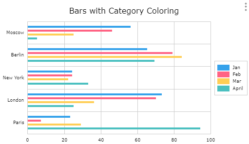 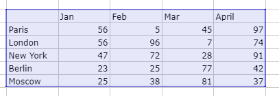
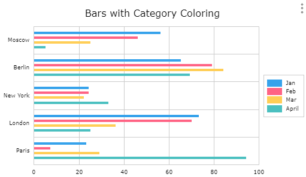 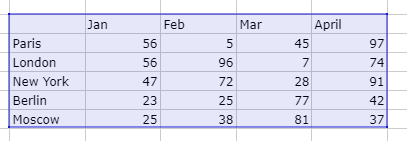
Column & Bar Charts are used to show differences between diferent data series categories. The height or length of a column/bar visualizes the value of a category. At least one data series is needed.
Line Chart¶


Line Charts are often used to describe values measured over time. But careful: They only connect datapoints over categories, so the distance between the categories does not claim to be accurate. This can be done via the X/Y Chart.
Combination Chart¶
It is possible to combine column, area and line representation of a data series in one chart. Create one of the mentioned charts in the above described way and select a single data series. In the Chart Wizard you are now able to select the form of representation for the series.


XY Chart¶


The XY Chart shows the relationship of data sets. In many use cases it is used for time series data, to show accurate time/value relations.
Area Chart¶

The Area Chart is similar to a line graph. Area charts are different from line graphs, however, because the area between the x axis and the line is filled in with color or shading. Area charts are a good choice to use when you want to show a trend over time, but aren’t as concerned with showing exact values. At least one data series is needed.
Pie & Doughnut Chart¶
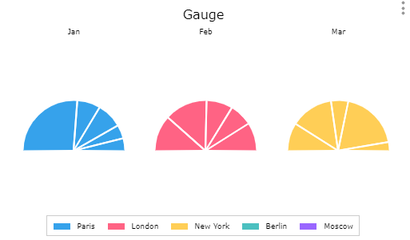
Pie & Doughnut Charts help to visualize parts of a whole and their respective size. Each segment of the pie represents its size in comparison to the other segments. One data series is needed.
Heatmap Chart¶


The Heatmap Chart visulizes intensity of points on a XY Chart. The closer together the hotter (red) the map gets. In this example picture we used timeseries functions for the data range. Click here if you want to know more about timeseries functions.
Stock Chart¶
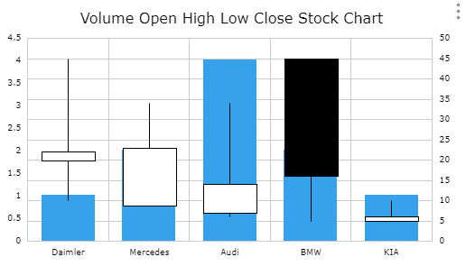 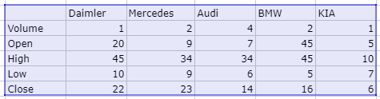
Stock Charts contain information about the x&y values and further the changes of a value and historical highs and lows. They use boxes to visualize these parameters. Depending on the selected version of the Stock chart one either needs three, four or five data series.
Funnel Chart¶
 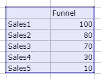
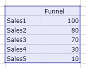
Funnel Charts are often used for visualizing linear processes with connected stages.
State Chart¶
State Charts visualize differnt states. Each state has a dedicated color. To display a state chart create three columns of data consisting of X axis, values and colors.
Depening on the State Chart type the X axis values use either categorie or timeseries data. To further use the information the values provide, uncheck the “100%” checkbox in the chart wizard. The size of the columne now represents the value.
Using “;” in the color column you can add line color and a specified datalable text. To see the text activate datalable and the “state” checkbox in the chart wizard.
State Chart Category:
Indicates different states of different categories.
 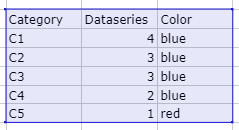
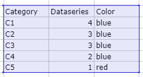State Chart Time:
Indicates states at certain time points.


State Chart Periode:
Indicates states over a time periode. From time point a to b.

Boxplot Chart¶


The Boxplot Chart can be used to graphically visualize the median, minimum, maximum and quartiels of a data set.
Waterfall Chart¶


The Waterfall Chart displays processes and their changes over set categories looking for increases, decreases, with the possibility of adding the sum.
Data Source¶
Every chart needs a data source to be able to display data. The most known practice is to use a data range. As seen in the “chart type” section, the ranges differ from type to type. Check out the examples above to get a better idea.
Besides using data ranges, the XY chart offers another option for data sources. Functions. Some functions hold data in their cell. These can either be timeseries functions or query functions (TIMEAGGREGATE(); TIMESCALE.SELECT(); …). Use a cell reference on one of these functions and you are able to create XY charts without creating huge data tables on your Streamsheet. Check out our Timeseries functions tutorial for more information.